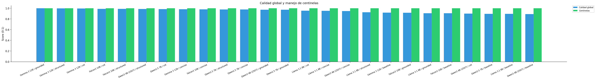
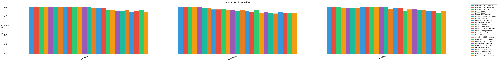
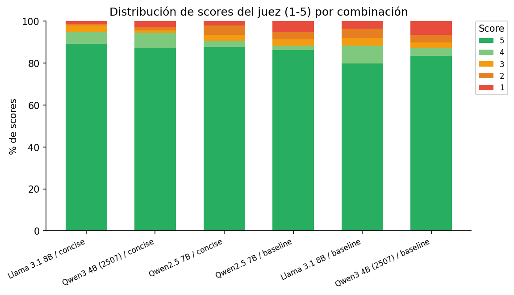
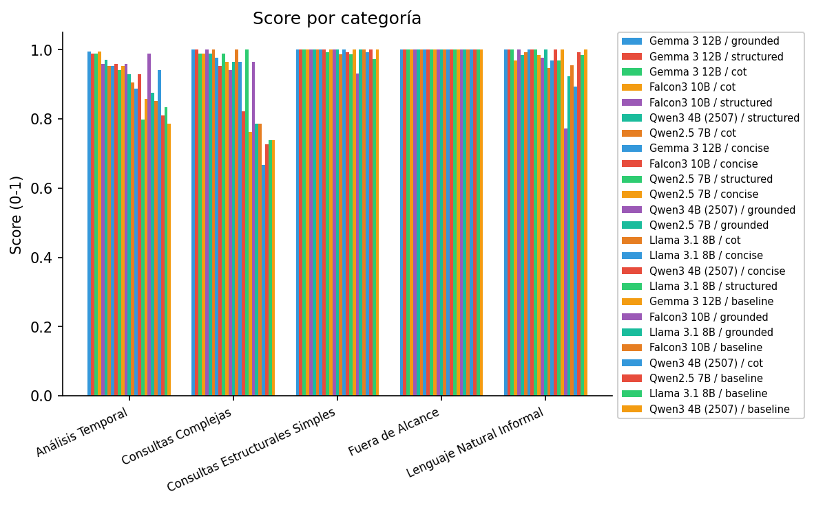

Latencia de generación

6 combinaciones modelo×prompt evaluadas sobre el GT de validación. Juez: claude-opus-4-8. Scores normalizados 0-1.
| Modelo / Prompt | Calidad (juez) | Calidad global | Centinelas | Latencia | ||||
|---|---|---|---|---|---|---|---|---|
| Correctitud | Completitud | Fidelidad | media | mediana | p95 | |||
| Llama 3.1 8B / concise | 0.973 | 0.908 | 0.973 | 0.951 | 1.000 | 2.0s | 1.6s | 6.3s |
| Qwen3 4B (2507) / concise | 0.951 | 0.891 | 0.962 | 0.935 | 1.000 | 1.9s | 1.5s | 5.1s |
| Qwen2.5 7B / concise | 0.940 | 0.886 | 0.946 | 0.924 | 1.000 | 1.5s | 1.2s | 4.3s |
| Qwen2.5 7B / baseline | 0.908 | 0.864 | 0.935 | 0.902 | 1.000 | 2.4s | 2.0s | 6.1s |
| Llama 3.1 8B / baseline | 0.924 | 0.891 | 0.859 | 0.891 | 1.000 | 3.9s | 2.8s | 10.3s |
| Qwen3 4B (2507) / baseline | 0.891 | 0.848 | 0.913 | 0.884 | 1.000 | 2.8s | 2.0s | 8.6s |
| Modelo / Prompt | Análisis Temporal | Consultas Complejas | Consultas Estructurales Simples | Fuera de Alcance | Lenguaje Natural Informal |
|---|---|---|---|---|---|
| Llama 3.1 8B / concise | 0.893 | 0.958 | 0.972 | 1.000 | 0.993 |
| Qwen3 4B (2507) / concise | 0.952 | 0.719 | 1.000 | 1.000 | 0.993 |
| Qwen2.5 7B / concise | 0.929 | 0.781 | 0.958 | 1.000 | 0.979 |
| Qwen2.5 7B / baseline | 0.845 | 0.719 | 1.000 | 1.000 | 0.993 |
| Llama 3.1 8B / baseline | 0.851 | 0.781 | 0.979 | 1.000 | 0.924 |
| Qwen3 4B (2507) / baseline | 0.816 | 0.667 | 1.000 | 1.000 | 0.993 |



